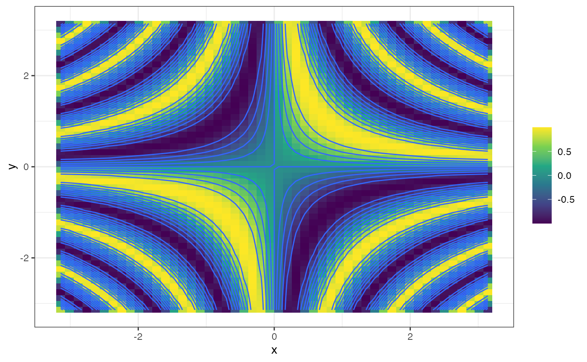
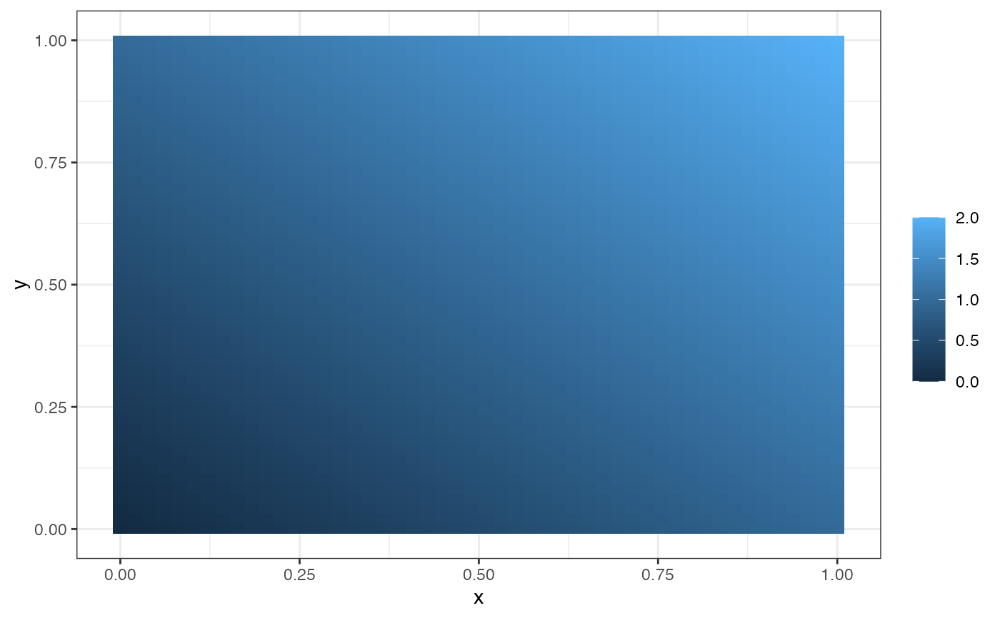

Plot functions of two variables as tile and/or contour plots.
gf_function_2d( object = NULL, fun = identity, xlim = NULL, ylim = NULL, ..., tile = TRUE, contour = TRUE, resolution = 50 ) gf_function2d( object = NULL, fun = identity, xlim = NULL, ylim = NULL, ..., tile = TRUE, contour = TRUE, resolution = 50 ) gf_function_contour( object = NULL, fun = identity, xlim = NULL, ylim = NULL, ..., resolution = 50 ) gf_function_tile( object = NULL, fun = identity, xlim = NULL, ylim = NULL, ..., resolution = 50 ) gf_fun_2d( object = NULL, formula = NULL, xlim = NULL, ylim = NULL, tile = TRUE, contour = TRUE, ..., resolution = 50 ) gf_fun2d( object = NULL, formula = NULL, xlim = NULL, ylim = NULL, tile = TRUE, contour = TRUE, ..., resolution = 50 ) gf_fun_tile( object = NULL, formula = NULL, xlim = NULL, ylim = NULL, ..., resolution = 50 ) gf_fun_contour( object = NULL, formula = NULL, xlim = NULL, ylim = NULL, ..., resolution = 50 )
Arguments
| object | An R object, typically of class "gg". |
|---|---|
| fun | A function of two variables to be plotted. |
| xlim | x limits for generating points to be plotted. |
| ylim | y limits for generating points to be plotted. |
| ... | additional arguments passed to |
| tile | A logical indicating whether the tile layer should be drawn. |
| contour | A logical indicating whether the contour layer should be drawn. |
| resolution | A numeric vector of length 1 or 2 specifying the number of grid points at which the function is evaluated (in each dimension). |
| formula | A formula describing a function of two variables to be plotted. See |
Value
A gg plot.
Examples
theme_set(theme_bw()) gf_function_2d(fun = function(x, y) sin(2 * x * y), xlim = c(-pi, pi), ylim = c(-pi, pi)) %>% gf_refine(scale_fill_viridis_c())gf_function_2d(fun = function(x, y) x + y, contour = FALSE)gf_function_tile(fun = function(x, y) x * y) %>% gf_function_contour(fun = function(x, y) x * y, color = "white") %>% gf_refine(scale_fill_viridis_c())gf_fun_tile(x * y ~ x + y, xlim = c(-3, 3), ylim = c(-2, 2)) %>% gf_fun_contour(x * y ~ x + y, color = "white") %>% gf_refine(scale_fill_viridis_c()) %>% gf_labs(fill = "product")#> #> #>